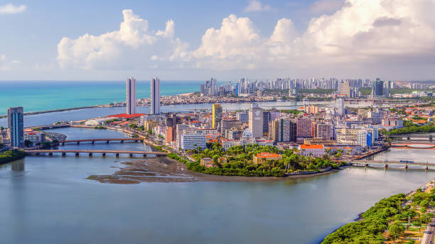

Assignment#1 by Lucas Oliveira
Copy-and-Paste was programmed by programmers for programmers actually.
My home country is Brazil, and there are so many interesting facts about it. Here are some points important to state:
- Language: In Brazil we speak the language Portuguese.
- Culture: We have so many cultures mixed in our country, but mainly borrowed by Europeans and African.
- Food: Recife is a city in northeastern Brazil known for its vibrant and diverse culinary scene. The local cuisine is heavily influenced by the region's history, blending Portuguese, African, Indigenous, and Dutch culinary traditions.
- History: Recife was initially settled by the Portuguese in the 16th century. It became a thriving port city and played a crucial role in the sugar trade during the colonial period.
- Natural Beautis: Recife is famous for its beautiful urban beaches, such as Boa Viagem Beach and Pina Beach. A historic town near Recife, Igarassu boasts beautiful colonial architecture and a scenic waterfront, making it a charming place to visit.
About Me... Lucas Oliveira